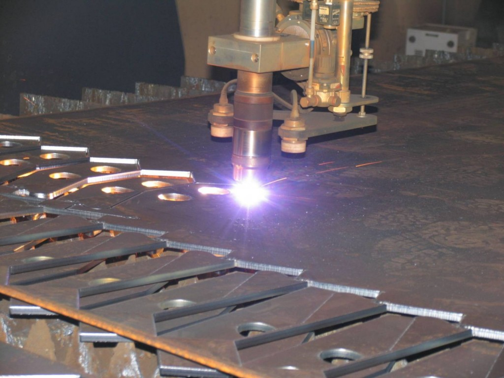
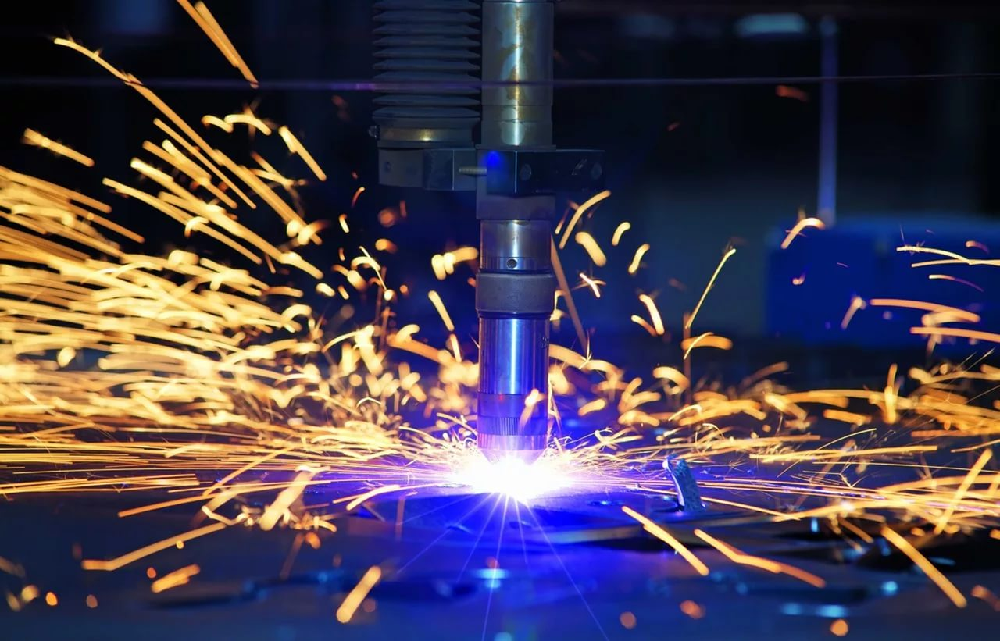
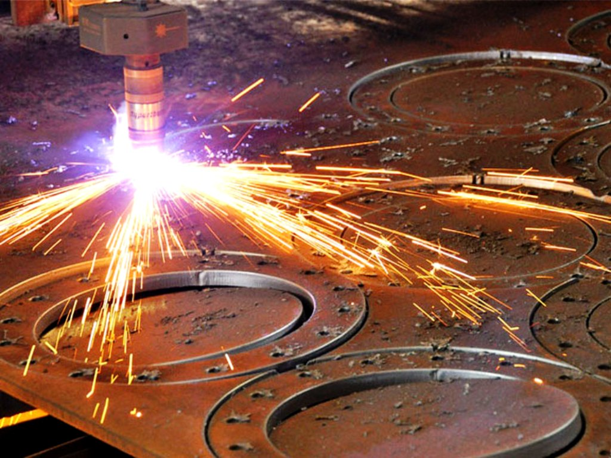
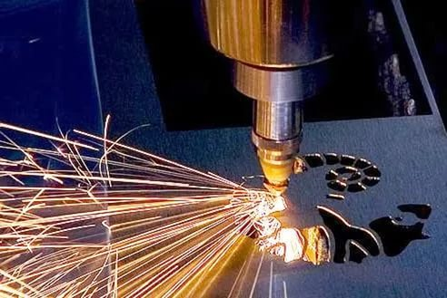

Наша компания предлагает услуги плазменной резки металла любой сложности.
Резка различных металлов с помощью плазмы - это один из самых современных и технически совершенных методов работы с множеством видов металлов.
Преимущества плазменной резки:



